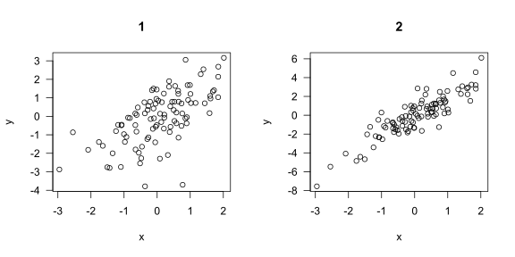
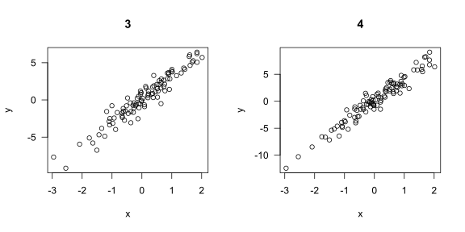
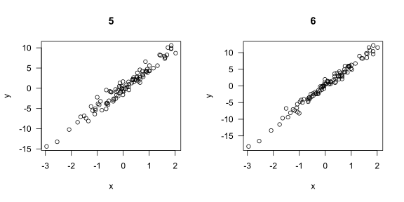
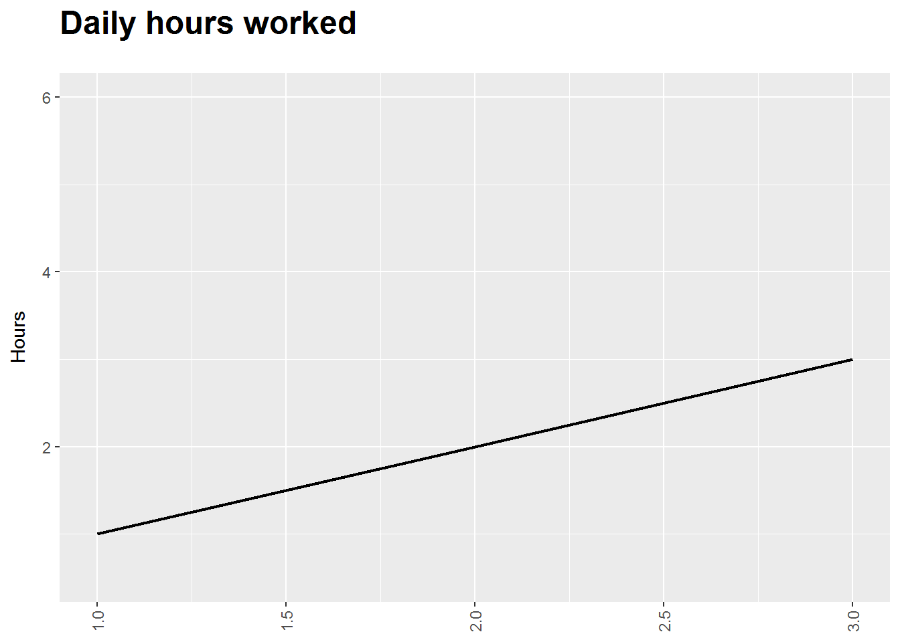

Programs - GCAM
R Figures
n <- 100
x <- rnorm(n)
par(mfrow=c(1,2), las=1)
for(i in 1:8) {
y <- i*x + rnorm(n)
plot(x, y, main=i)
}
require(ggplot2);library(ggplot2)## Loading required package: ggplot2x1<-data.frame(Date=c(1,2,3),Hours=c(1,2,3),Project=c(3,4,5))
x1$DummyUp<-x1$Hours*2
x1$DummyDown<-x1$Hours*0.5
p1<-ggplot(x1,aes(x=Date,y=Hours))
p1 <- p1 + geom_line(size=0.8)
p1<- p1 + scale_color_brewer(name="Theme",palette="Set1")
#p1 <- p1 + geom_bar(aes(fill=Project),stat="identity", color="black")
#p1<- p1 + guides(fill = guide_legend(override.aes = list(colour = NULL),ncol=4))
#p1<-p1 + facet_grid(Theme+Project ~ .)
#p1<-p1+geom_text(aes(y=Hours,label=prettyNum(round(Hours,1),big.mark=",")),size=2,hjust=-0.2,angle=90)
p1 <- p1 + xlab(NULL) + ylab("Hours") + theme(axis.title.y=element_text(margin=margin(r=10)))
p1 <- p1 + ggtitle ("Daily hours worked") + theme(plot.title=element_text(face="bold",size=18,margin = margin(b=20)))
p1<-p1+theme(legend.position="bottom") + theme(legend.title=element_blank())
#p1<-p1+scale_x_date(date_breaks = "1 week", date_minor_breaks = "1 day", date_labels = "%d-%b-%Y")
p1<-p1+theme(axis.text.x = element_text(angle=90, vjust =0.5 ,hjust=1))
p1 <- p1 + geom_blank(aes(y=DummyUp)) + geom_blank(aes(y=DummyDown))
plot(p1)
kable
n <- 100
x <- rnorm(n)
y <- 2*x + rnorm(n)
out <- lm(y ~ x)
library(knitr)
kable(summary(out)$coef, digits=2)| Estimate | Std. Error | t value | Pr(>|t|) | |
|---|---|---|---|---|
| (Intercept) | 0.04 | 0.1 | 0.41 | 0.69 |
| x | 2.01 | 0.1 | 19.68 | 0.00 |
X table
n <- 100
x <- rnorm(n)
y <- 2*x + rnorm(n)
out <- lm(y ~ x)
library(xtable)
tab <- xtable(summary(out)$coef, digits=c(0, 2, 2, 1, 2))
print(tab, type="html")| Estimate | Std. Error | t value | Pr(>|t|) | |
|---|---|---|---|---|
| (Intercept) | 0.00 | 0.09 | 0.0 | 0.99 |
| x | 1.90 | 0.09 | 21.6 | 0.00 |